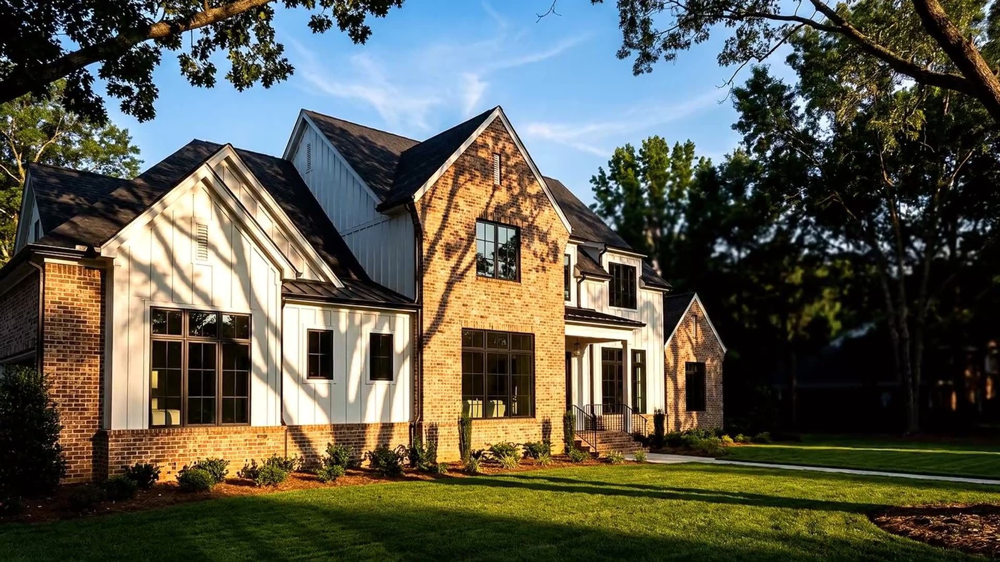
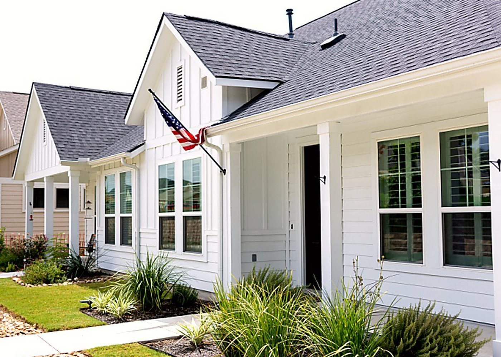

I'm buying
You are competing against people with more information than you. We fix that in the first meeting, before you fall in love with the wrong house.
How we represent buyers →
Jacksonville · Onslow County · Sneads Ferry · Topsail
Most agents can only do one of those. I am a licensed broker and an active buyer, so you get a real listing strategy and a real number to compare it against. Then you pick.
U.S. Army veteran · Military Relocation Professional · NC Broker #300792
Start Here
Four ways in, and I will tell you honestly which one fits your situation before you commit to any of them.
You are competing against people with more information than you. We fix that in the first meeting, before you fall in love with the wrong house.
How we represent buyers →
Your house has one week of real attention. Everything we do is aimed at that week. Pricing, prep, media, timing, and the list that goes out before the sign does.
See the listing plan →
You are moving to a county you have visited twice, maybe once. We map the commute to your gate, the flood zone, the insurance and the resale before you commit to a zip code.
Relocation support →
Inherited it, behind on it, tired of fixing it, or just want it done. I buy houses, land and mobile homes directly. You get my cash number next to a listing plan, and you pick.
Get a cash offer →Areas We Serve
Onslow County is not interchangeable. A twenty minute difference in drive time can be a hundred thousand dollar difference in what you get and a very different answer on what it will be worth in 2032.
We work the areas we actually know. If you are looking somewhere we do not cover well, we will tell you and refer you to someone who does.
Camp Lejeune & MCAS New River
U.S. Army, 2003, stationed in Hawaii. I know what a set of orders does to a timeline, because I have been on the other end of one.
Most of the guides about moving here were written in Colorado or Wilmington by companies selling your name to an agent. They can give you the mileage to the gate. They cannot tell you what time to leave Sneads Ferry on a Tuesday to make formation at Stone Bay, or what to do with the house when the orders come two years early.

Why Josh
From The Blog

Most sellers only ever see one number. A cash buyer shows you theirs, or an agent shows you theirs, and you are left guessing what the other one...
Read it →
You did not ask for a house. Now you have one, plus a lawn, a power bill and a family group text. Here is the order I would handle it...
Read it →
Most buy-or-rent advice for Lejeune stops at "it depends." It does depend, on four things you can actually check from wherever you are stationed now....
Read it →Common Questions
It depends on your price band, which is why the countywide number is close to useless on its own. Onslow County closed 424 homes in August at a median of $313,745, with an average of 52 days on market and 3.59 months of supply. Here is the part nobody mentions: the median rose 1.54 percent while the average sale price fell 5.01 percent. The top of the market is softening faster than the middle. If you are listing above $400,000 that matters far more to you than the headline does.
You need it before you write an offer, not before you look. Go see houses first. If you fall in love with something in week one and you are not pre approved, you lose it. So get the paperwork moving early, but do not let it stall the tour.
Buyers sign a representation agreement that spells out the fee and how it gets paid, before we tour anything. Sellers get a listing proposal with the number, what it covers, and what it does not. No surprises, in writing, on day one.
Yes, and it is a large share of what I do. Video tours, neighborhood drives, gate-by-gate commute mapping, flood zone and insurance checks before you commit, and a local inspector who tells you the truth. If you are coming in on orders, send me your report date and I will work backward from it.
Start Here
Tell us where you are in the process. We will tell you what we would do if it were our money.
Call or text (910) 333-5433
Email homessoldbyjosh@gmail.com